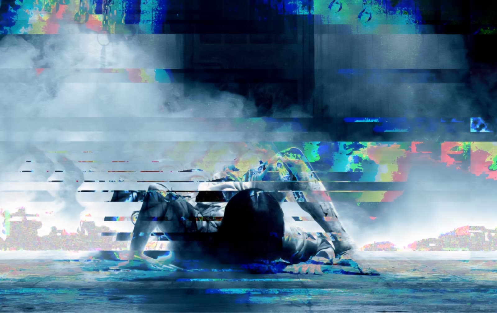
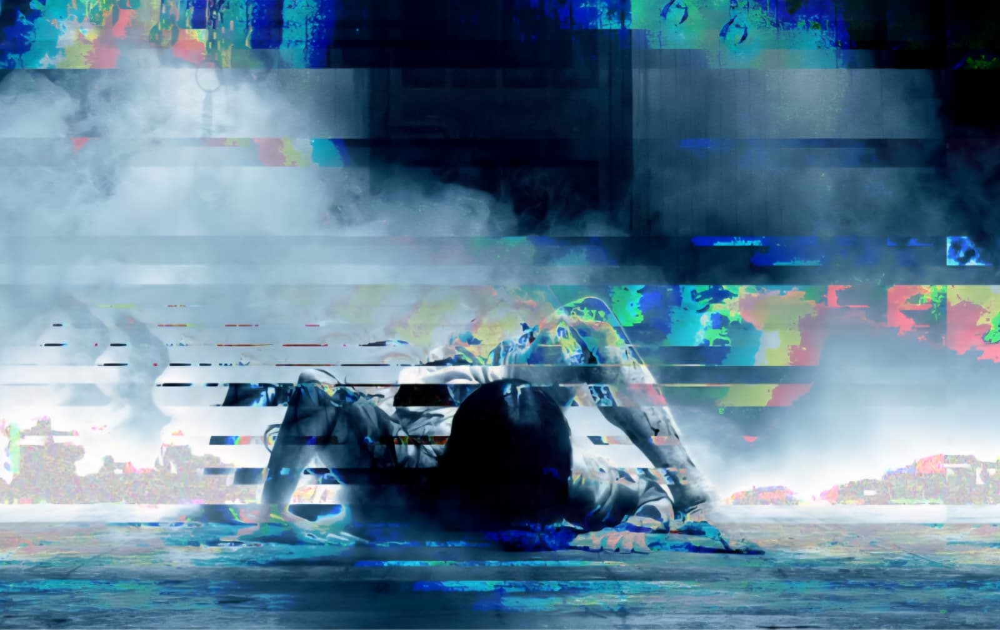
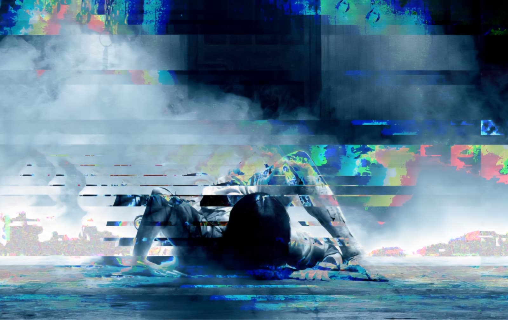

The series of images was created in reference to the horror icon Samara Morgan from the movie The Ring. The series of glitched images is meant to convey a sense of fear, distortion, unease, and even loss. The glitch effect, similar to the loss of signal or color on a television, represents Samara’s supernatural powers in the real world that moment before death when all that can be seen is a distorted signal.
